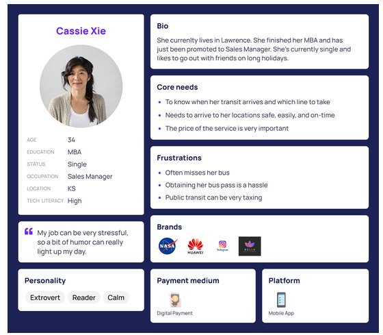
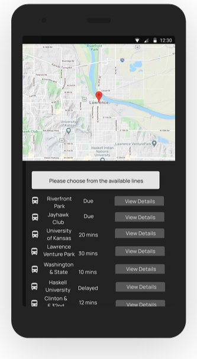
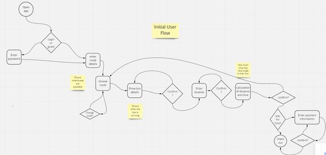
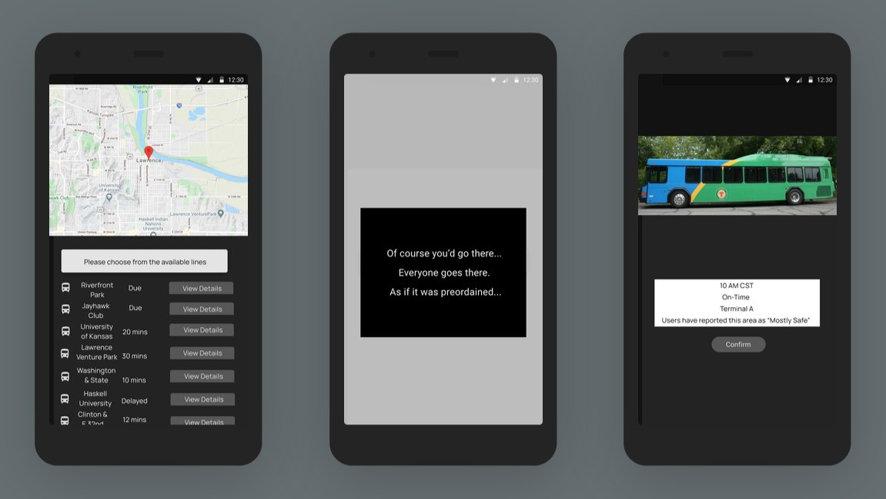
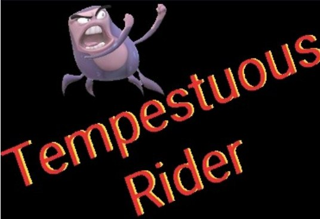

Tempestuous Rider
A bus app with snark to liven up riders' journeys, for the rider who wants to get somewhere on a budget.
- Role
- UX designer: visual design, UX research, analysis, information architecture, prototyping, interaction, and usability testing
- Project
- Course project
- Tools
- Figma

See a need. Fill a need.
This app was designed for a project where we were charged with making a bus app. It occurred to me that in the current climate, just another app wouldn't do it.
It needed something with humor, to help break up the monotony of the everyday and the gloom of isolation. Surveys confirmed that a large percentage of people would welcome humor in their daily commute.
The problem
Client: a transportation agency for a mid-size metropolitan area in the Midwest. I chose Lawrence, Kansas.
Background: the agency has added several new lines due to expansion. It can now track its buses, but has no real way to share that with riders.
The agency has a problem keeping buses on schedule due to traffic and several other reasons. Riders don't really know when their next bus is coming because of continuous delays, and they're never clear on how much time they have before they should head out to the bus.
Who it's for
Those who use the bus system as one of their main modes of transportation.
Research
Survey responders who use the bus as their main source of transportation
- Use Google Maps to plan their commute
- 92%
- Use the same routes in their daily commute
- 94%
- Commute mostly to work
- 81%
- Use navigation apps to check bus schedules
- 92%
Main frustrations riders have when using the bus
- The bus being late
- 82%
- It takes a long time to get to my destination
- 57%
Personas
Based on the interviews and workshop, we set up a persona and referred to it throughout the entire product development process, especially at the beginning and end of the design.
We built this persona from the data gathered in our research, surveys, and interviews. Along with user testing, it helped us make corrections to the end product: timetable corrections, the ability to buy bus passes from inside the app, and some of the details.
We really wanted to convey the type of person Cassie is: her core needs, her pain points, how she feels about her usual transit, and so forth. Eventually, this persona was part of a slide deck used to showcase the project.

Competitive analysis: Google Maps
![SWOT analysis of Google Maps for bus riders. Strengths: shows if a bus is delayed and by how many minutes, tells you when the bus arrives at the stop, a helpful live view, and a live tracker. Weakness: tells you when the bus will arrive but not how many minutes away it is, no Siri integration, and no reminders or alerts for when to leave. Opportunities: saved locations are hard to reach, and it's a broad navigation app not tailored to bus riders. Threats: an extremely trusted source with massive databases.](../assets/Images/TempestuousRider/tempestuous-rider-swot-google-maps.jpg)
Wireframes
At the beginning of my design process, I created wireframes for testing.
I made both low-fidelity and high-fidelity wireframes in Figma, and lo-fi can really help flesh out initial ideas and show how those ideas work together. Both were used for user testing, because if the flow isn't clear in lo-fi, it's going to be a mess at higher fidelity.

User testing
Before launching the product, I ran a testing round to reveal possible usability problems. We remotely tested survey members who said they'd be interested in learning more about the product, hoping to find and iron out any hindrances to its success and flow.
After several iterations, users gave it 4 out of 5 stars or higher. Every iteration brought us one step closer to users' comments about how smooth and easy the app was, and that they enjoyed it.
User flow
Albeit simple, our first real project for this course was innovative and flowed quite well.

The screens

Branding and sketches
This sketch helped iron out a look for what the app needed and a baseline for the UI. For this project, we needed a section focused on branding and logos. These were early sketches and vector art to see what the face of the app would be.


Final thoughts
Tempestuous Rider won't be everyone's cup of tea, but for those who love a splash of snark with their day, it'll certainly keep things amusing. I was glad that so many enjoyed this app.